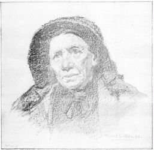
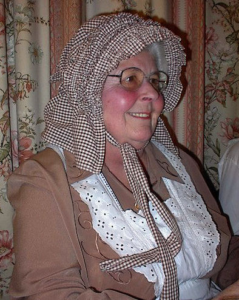
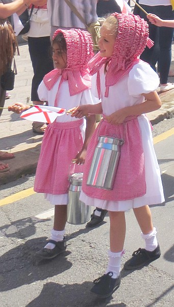
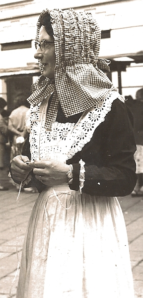
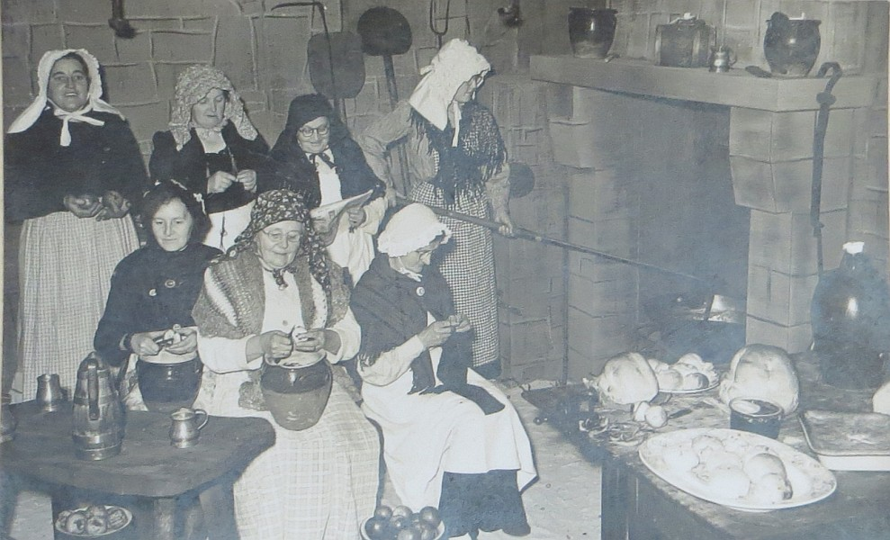
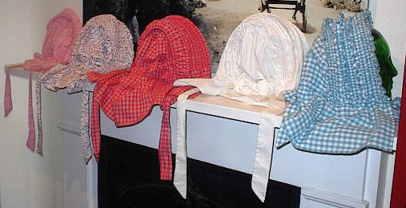

Lé bannète Jèrriais pathaît aver appathu au c'menchement du drein siècl'ye, ch'est à dithe ofûche dans les travèrs des mil huit chents vîngt. Dévant ch'la, ch'tait eune capote qué les femmes portaient sus la tete. Lé mot nouos vînt sans doute dé l'Angliais "bonnet" et fut adapté en Jèrriais quand les “sun-bonnets" c'menchîdrent à v'nîn d'Angliétèrre. Pouor les femmes à lus coêffi, ch'tait considéthé gentiment pus joli qué la capote quand vînt ches temps-là. Les danmes et les d'mouaîthelles sustout les portaient, et les femmes dé bouonne clâsse dé la campangne pouor les occasions spéciales. Pus tard nou dîthait souvent sans distînction un bannête ou eune capote. Mais d'vant l'arrivée du bannète, les coêffes et les capotes étaient d'usage commun. Les Trinnetais, ieux, prononçaient "bonnète” comme d'aut's amontains étout. Y'avait un bannète à colet, pouor mettre à aller à l'églyîthe, et pis, à la mode des St. Ouonnaîthes, un bannète à ruche. Un "bonnet" est tout à fait aut' chôthe. Dans des parties d'Nouormandie, pouor un bonnet à femmes, il dithent un "bonnette" étout.
La capote 'tait bein pus vielle, mais ou continnuit à êt' mînthe en même temps qué l'bannète et enfîn jusqu'à tchiques années auprès la dreine dgèrre. Mais lé bannète, dgia, dispathaîssait p'tit à p'tit auprès la preunmié dgèrre. Pouor lé dînmanche ch'tait la capote en néthe souaie tch'était la mode (j'en possédons acouo ieune tch'a bein en d'ssus d'chent ans, ayant apparténu à eune grand-grand-tante.) mais sus la s'maine ch'tait pûtôt en bliue îndgienne, et cétéra. À St. Ou la capote du dînmanche avait eune ruche étout.

Comme nou-th-a dêja dit pus haut, les coêffes étout 'taient bein pus vielles, mais i' dispathûdrent auprès la preunmié dgèrre dé quatorze à dgiêx-huit. Lé tout temps passé, les femmes 'taient t'nues dé porter des coeffes s'lon lus position sociale, souos peine d'amende. Y'avait des coêffes dé v'lous, des coeffes dé souaie, dé mousselinne, dé dentelle, dé coton, ofûche en brodage, et cétéra. Y'avait étout, sans doute, les coêffes dé niet, et tchiques-eunes dé ches'-chin restîdrent en usage pus tard qué les autres, quâthi jusqu'à la deûthième dgèrre.
Comme nou-th-a dit étout, les bannètes vîndrent auprès les capotes, et dans l's Îles (en Jèrri et en Dgèrnéthy sustout) il' evoluîdrent difféthemment. Y'en avait dé bein des sortes et faichons, et quant ès pus bieaux ch'tait tout à fait dé tchi raffinné et r'chèrchi. Et, pouor l'èrdithe acouothe eune fais d'pus, la capote ch'tait d'tchi vyi, tchi nouos était v'nu tout criabl'ye dé la Nouormandie. Et, lé bannète, ouaithe qué l'mot nouos veinge dé l'Angliais, lé bannète était tout sîmpliément, la capote amendée et, don, eune evolution.
Eh bein, en êffet, les temps ont bein cèrtainement changi. Y'a eune chentaine d'années, autcheune femme tchi s'respectait né sé s'sait pon pèrmînthe d'êt' veue d'houors la tête nue. Même en d'dan, eune femme mathiée sé couvrait la tete atout eune pétite coêffe en dentelle. En tout cas, en êté fallait s'protégi du solé, dans les clios aussi bein comme dans les rues, les bels et l's alentours dé san siez-sé.
Quant à la faichon du bannète, lé patron variait s'lon les parties d'l'Île ou s'lon les femmes tchi les faîthaient. Lé collet, pouor protégi la nuque du co, pendait sus l's êpaules et ava l'dos un mio, tchiquefais long, tchiquefais bein court. Lé bannète même 'tait arrondi atout d'la badgette dé ros ou d'ôthyi - quat' ou chînq, ou neuf ou dgix, ou jusqu'à tchinze ofûche - pouor lé faichonner pouor tch'i' s'tînsse sus la tete atout amathes et bliouques souos l'moton. Lé matériel était d'l'îndgienne pouor mett' au touos-les-jours, mais d'la souaie pouor lé dînmanche. Mais, y'en avait dé bein des sortes, et pouor touos les goûts, s'lon l'âge et s'lon étout lé rang d'la femme. I' n'mantchait pon d'couleu, ni n'tout, mais les pus anciennes 'taient censées êt' pus respectabliément coêffies en né, comme étout bein seux les veuves. Les filliettes tch'éthaient 'té sans lus bannète au solé en êté 'taient sujettes à tavelinner! Lé tout temps pâssé étout, la p'tite coêffe en dentelle portée en d'dan d'la maiethon restait souvent souos l'bannète quand eune femme sortait, quand oulle allait d'houors.
Et né v'là ... mais, dithons acouothe eune fais d'pus, qué lé bannète Jèrriais était difféthent étout du chein Dgèrnéthiais. Mais sans doute qué v'là tch'étha ieu eune même originne, en Nouormandie, pus tard (au c'menchement du drein siècl'ye) subissant l'înfluence du "sun-bonnet" Angliais. Enfin, i' né nouos reste à dithe que en Dgèrnéthy, ieux, dévant tch'i' n'connûssent lé bannète dé tchi jé v'nons d'pâler, les femmes portaient sus la tête un capé ou bannète, en né, engibâtré bein autrément, qué j'n'avions janmais connu en Jèrri. Et il a 'té dit qué i' s'y'en trouvait aucouo tchitch'un dans ch't' île là jusqu'à la preumié dgèrre. L'auteur Angliais H.D. Inglis en donne eune bouonne description dans san livre sus l's Îles de La Manche publié en 1835.
|  |  |  |

Viyiz étout: